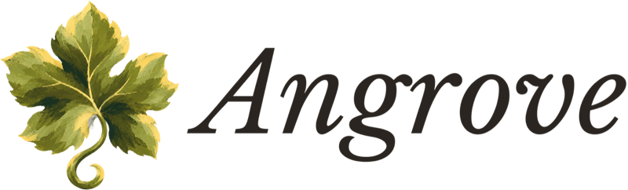
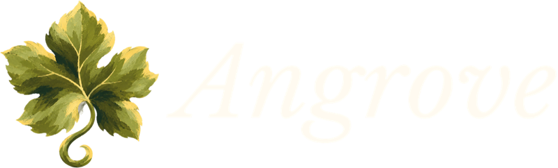

Brand


Applied AI engineer · Product designer
Most recently, I built Angrove on my own: a private study app that runs a 4-billion-parameter language model, source retrieval, and encrypted storage entirely on iPhone and Mac, with no server.
Open to product, design engineering, and iOS roles · Open to relocation
Selected work · 2026
 Angrove
AngroveA private AI study workspace for philosophy, history, and theology. Ask a question, check the primary sources behind the answer, and save the ideas worth keeping in a semantic map. Everything runs on the device: no model server, no account, works offline.
Engineering highlights
Answers, definitions, and tree updates all compete for a single on-device model. A shared task queue serializes them with cancellation and reordering, and a lifecycle manager handles loading, idle unloading, and background transitions. The card beside this list is that queue, running practice tasks.
Read ModelTaskQueue.swiftA bundled library of 37 primary works is embedded and searched on the phone. Source routing and passage locators pick the text a question actually needs, and answers link back to the passages they drew on.
Read MiniLMGroundingProvider.swiftSaved personal data is encrypted at rest with per-platform Keychain keys. Startup validates ciphertext and migrates existing plaintext installs in place, covered by migration regression tests.
Read LocalDataEncryption.swiftConversation, persistence, retrieval, and design-system code live in a shared layer. Each platform owns its navigation, windows, and input, so the Mac app feels like a Mac app rather than a stretched phone.
Read MacWorkspaceView.swiftThe model's native “thinking” mode roughly doubled answer time without improving objective passes across two evaluation sets, so it ships off by default. Read the comparison.
Model Tasks
Design and web
I designed Angrove's interface and visual identity in Figma, then built it as a SwiftUI design system shared by both apps. I also designed and hand-built angrove.app in plain HTML, CSS, and JavaScript, including the interactive explainers in its User Guide.
Design system
The tokens behind Angrove, mirrored from Figma paint styles into SwiftUI and shared by the iPhone app, the Mac app, and angrove.app.
Brand


Color
Typography
Libre BaskervilleThe editorial voice: titles, headings, and quotes.
FigtreeThe interface: labels, body copy, buttons, and cards.
Components
Insight
Prudence
Right reason applied to action: the virtue of choosing well in particular circumstances.
About
I started as a web designer and became a software engineer by building the things I wanted to exist. Angrove began when I learned a capable language model could run entirely on a phone, and I wanted to see what a private, thoughtful AI tool could look like end to end. I care about products where design and engineering are one decision, not a handoff. I'm looking for product engineering, design engineering, or iOS roles, including design-focused teams, and I'm open to relocating.
Writing
Testing compressed models led back to a more useful question: what happens when the model has the right source?
Takeaway Gemma 4 E4B stays. The next step is better evidence, including an optional Wikipedia search.
Fresh launches, twenty answers in a row, and the cost of restarting the model engine on an iPhone 17.
Takeaway Loading and periodic engine restarts are part of the wait people experience, so they need to be measured alongside generation.
Four simulator runs tested whether native thinking earned its extra answer time in Angrove.
Takeaway Native thinking stays off by default: aggregate objective passes were unchanged across these development sets, while answer time roughly doubled.
Earlier Gemma 12B and Qwen3-4B experiments showed why short generation, session retention, and trustworthy citations need separate checks.
Takeaway A successful short answer is only the first gate. These experiments were shelved on September 25, 2026.

Contact
Open to product, design engineering, and iOS roles, and to relocation. Happy to walk through any part of the code.
Or try the work yourself: download the Angrove beta for iPhone.